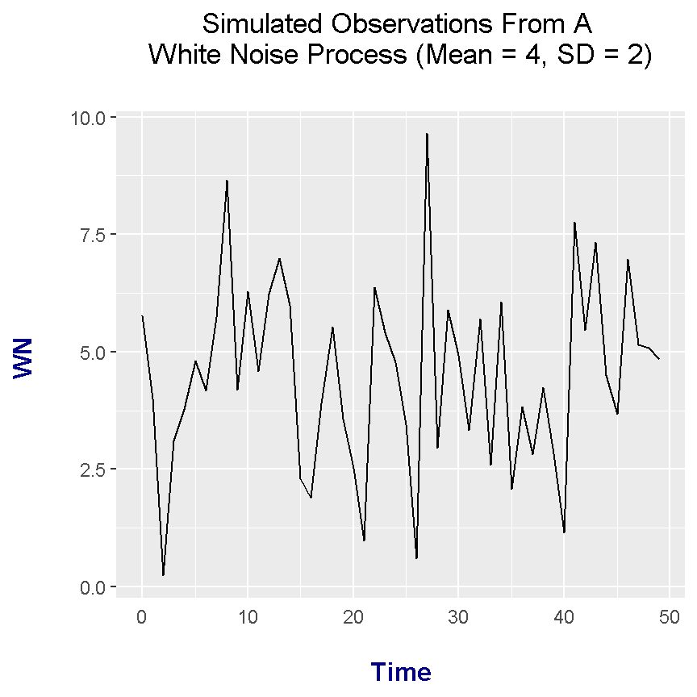

Hi. This page focuses on simulating white noise in R. White Noise is a very simple stationary process in the field of time series analysis. Weak white noise has a fixed constant mean over time and a fixed constant variance and there is no correlation over time.
I use Datacamp Slides as my reference but the plots are in base R graphics. The plots here are generated with ggplot2.
To simulate observations from a White Noise process, the arima.sim() function is used. Make sure to use model = list(order = c(0, 0, 0).
# Simulating White Noise (Time Series)
# Reference: Datacamp Slides
# In the slides, a base R graphics plot is used. I want to use ggplot2 as ggplot2 looks
# nicer.
library(ggplot2)
# White Noise is a very simple stationary process.
# Weak white noise has a fixed constant mean, a fixed constant variance and
# no correlation over time.
#### Simulate 100 observations in White Noise model.
wn_sim_100 <- arima.sim(model = list(order = c(0, 0, 0)), n = 100)
head(wn_sim_100)## [1] -0.8333583 1.0140553 0.2805254 1.4033654 1.0580948 0.3120627ts_wn100 <- data.frame(Time = seq(0, 99, 1), WN = wn_sim_100)
head(ts_wn100); tail(ts_wn100)## Time WN
## 1 0 -0.8333583
## 2 1 1.0140553
## 3 2 0.2805254
## 4 3 1.4033654
## 5 4 1.0580948
## 6 5 0.3120627## Time WN
## 95 94 0.1729552
## 96 95 1.1674964
## 97 96 -0.5647851
## 98 97 -0.5251206
## 99 98 0.1787511
## 100 99 1.1456842
From the ts_wn100 data frame, a plot can be generated with the help of ggplot2 graphics.
# Ggplot2 line plot of simulated white noise observations:
ggplot(data = ts_wn100, aes(x = Time, y = WN)) +
geom_line() +
labs(x = "\n Time ", y = "WN \n", title = "Simulated Observations From A White Noise Process \n") +
theme(plot.title = element_text(hjust = 0.5),
axis.ticks.x = element_blank(),
axis.title.x = element_text(face="bold", colour="darkblue", size = 12),
axis.title.y = element_text(face="bold", colour="darkblue", size = 12))## Don't know how to automatically pick scale for object of type ts. Defaulting to continuous.
Adding More Observations In White Noise Simulation
### Simulate 10000 observations in White Noise model.
wn_sim10000 <- arima.sim(model = list(order = c(0, 0, 0)), n = 10000)
head(wn_sim10000)## [1] -1.3416160 -2.0917630 -0.9199639 -1.2969639 -0.6874203 -0.7232486ts_wn10000 <- data.frame(Time = seq(0, 9999, 1), WN = wn_sim10000)
head(ts_wn10000); tail(ts_wn10000)## Time WN
## 1 0 -1.3416160
## 2 1 -2.0917630
## 3 2 -0.9199639
## 4 3 -1.2969639
## 5 4 -0.6874203
## 6 5 -0.7232486## Time WN
## 9995 9994 -0.2686607
## 9996 9995 0.6225617
## 9997 9996 -0.3849075
## 9998 9997 0.7504948
## 9999 9998 -1.2778687
## 10000 9999 0.1074248# Ggplot2 line plot of simulated white noise observations:
ggplot(data = ts_wn10000, aes(x = Time, y = WN)) +
geom_line() +
labs(x = "\n Time ", y = "WN \n", title = "Simulated Observations From A White Noise Process \n") +
theme(plot.title = element_text(hjust = 0.5),
axis.ticks.x = element_blank(),
axis.title.x = element_text(face="bold", colour="darkblue", size = 12),
axis.title.y = element_text(face="bold", colour="darkblue", size = 12))## Don't know how to automatically pick scale for object of type ts. Defaulting to continuous.
The simulations above dealt with a White Noise process with a mean of 0 and a variance of 1. This next part deals with a white noise model with a mean of 2 and a variance of 4 (or standard deviation of 2).
# Simulating observations from white noise model with different means and variance.
# Simulate 50 observations from the WN model with mean = 2, sd = 2 (var = 4)
wn_2 <- arima.sim(model = list(order = c(0, 0, 0)), n = 50, mean = 4, sd = 2)
head(wn_2)## [1] 5.774795 4.005328 0.233911 3.116922 3.786954 4.811082ts_wn_2 <- data.frame(Time = seq(0, 49, 1), WN = wn_2)
head(ts_wn_2); tail(ts_wn_2)## Time WN
## 1 0 5.774795
## 2 1 4.005328
## 3 2 0.233911
## 4 3 3.116922
## 5 4 3.786954
## 6 5 4.811082## Time WN
## 45 44 4.501007
## 46 45 3.668701
## 47 46 6.973405
## 48 47 5.156340
## 49 48 5.085812
## 50 49 4.844296# Ggplot2 line plot of simulated white noise observations:
ggplot(data = ts_wn_2, aes(x = Time, y = WN)) +
geom_line() +
labs(x = "\n Time ", y = "WN \n", title = "Simulated Observations From A \n White Noise Process (Mean = 4, SD = 2) \n") +
theme(plot.title = element_text(hjust = 0.5),
axis.ticks.x = element_blank(),
axis.title.x = element_text(face="bold", colour="darkblue", size = 12),
axis.title.y = element_text(face="bold", colour="darkblue", size = 12))## Don't know how to automatically pick scale for object of type ts. Defaulting to continuous.
# Fit second white noise model with arima():
arima(wn_2, order = c(0, 0, 0))##
## Call:
## arima(x = wn_2, order = c(0, 0, 0))
##
## Coefficients:
## intercept
## 4.4938
## s.e. 0.2810
##
## sigma^2 estimated as 3.948: log likelihood = -105.28, aic = 214.55# Mean and variance of white noise:
mean(wn_2)## [1] 4.493833var(wn_2)## [1] 4.028461